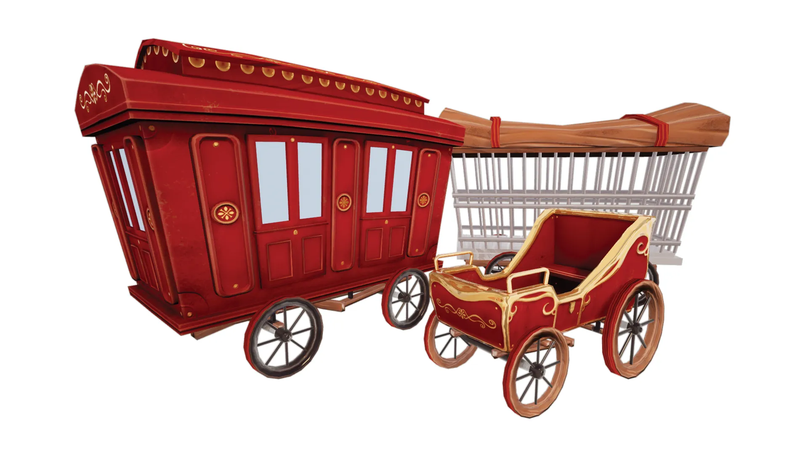
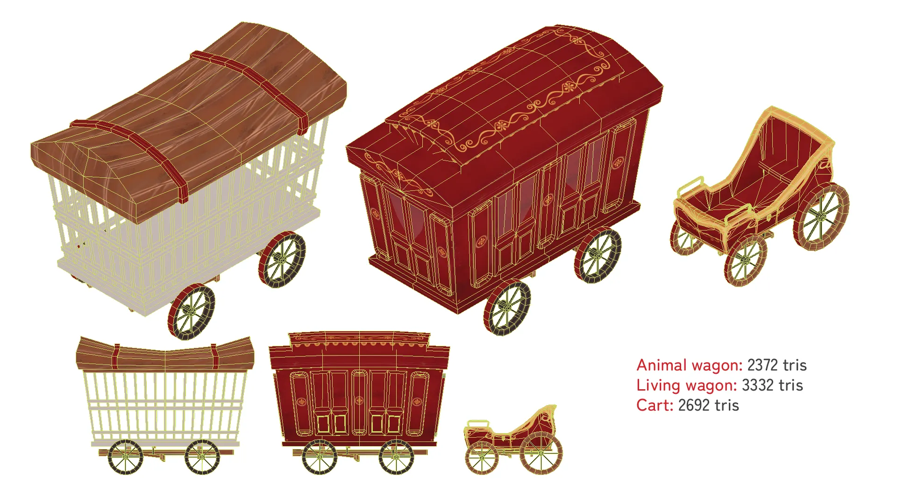
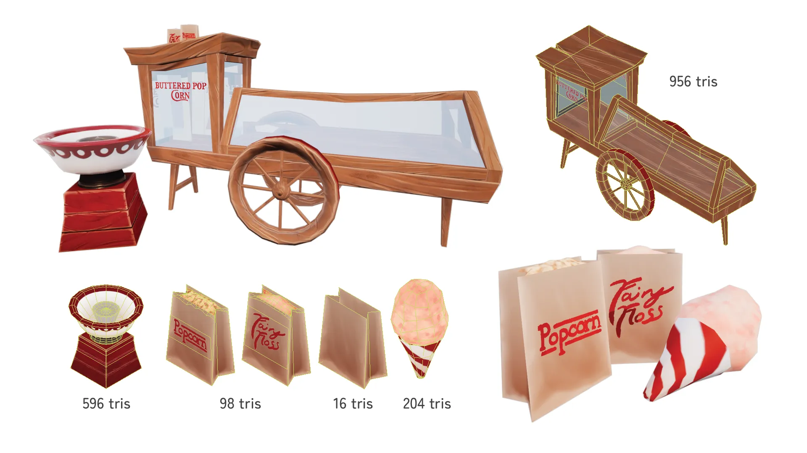
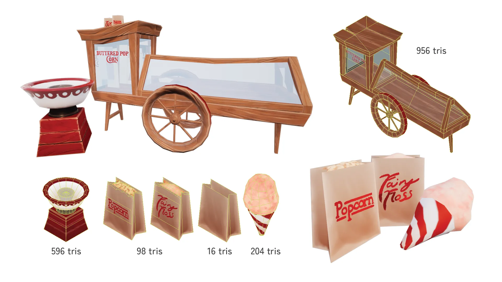
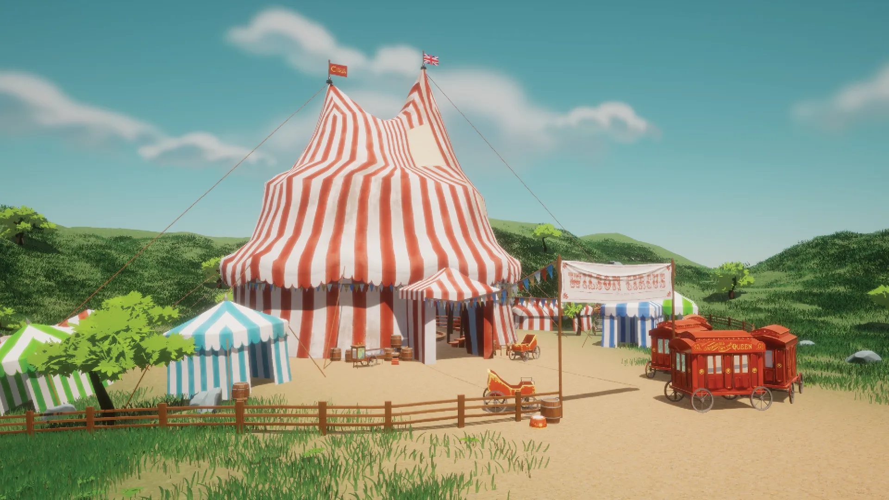

Victorian Circus Set
Low-poly Victorian circus themed props with stylized PBR texturing. Exaggerated, cartoony designs based on photo and art reference from the late 19th century and early 20th century. For this set of props, I used trimsheets for objects which only required wood, rope, and metal. Bigger objects with more details had unique atlas textures baked after sculpting in ZBrush. They were all textured in Substance Painter using procedual tools (fills, geenrators) and masking.
 
 


This scene includes previous versions of the models, which used handpainted non-PBR texturing (lost due to data corruption).
